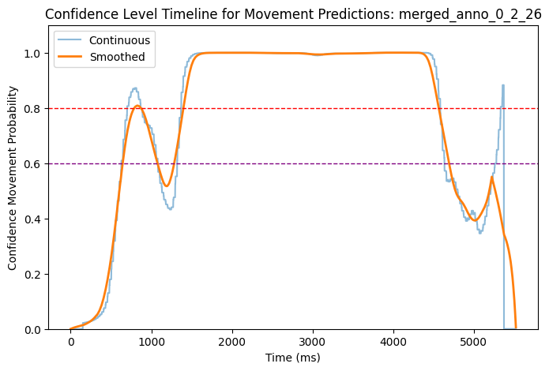

Movement annotation II: Training movement classifier, and annotating timeseries data
Overview
This notebook has been adapted from machine learning workshop by Esam Ghaleb (see Github repository), and adapted mostly by Hamza Nalbantoglu.
In this notebook, we train a movement classifier using logistic regression. We train four models for four tiers of movement - head, arms, upper body, and lower body. The training datasets have been prepared in the previous script.
Afterwards, we use the models to annotate the original timeseries data that have been prepared in the previous script. The timeseries data have been adapted to the same format as the training data, and contain overlapping time windows of 25 ms. We use these overlaps to build a continuum consisting of the model’s confidence, and use a threshold of the confidence to determine whether the movement is present or not.
Code to prepare the environment
import osimport globimport pandas as pdimport numpy as npfrom sklearn.preprocessing import StandardScaler, MinMaxScaler, LabelEncoderfrom sklearn.linear_model import LogisticRegressionfrom sklearn.model_selection import train_test_splitfrom sklearn.metrics import confusion_matrix, classification_reportimport seaborn as snsimport matplotlib.pyplot as pltimport warningsimport joblibwarnings.filterwarnings("ignore")curfolder = os.getcwd()# Here we store training datatrainingfolder = curfolder +'\\TrainingData\\'# Here we store data for classifyingclassifyingfolder = curfolder +'\\TS_forClassifying\\'# Here we store modelsmodelsfolder = curfolder +'\\Models\\'
Training a classifier
We train the model on four tiers separately - head, arms, upper body, lower body - as they were annotated in this way manually by human annotators. The train_test_split function is used to split the data into training (75% of the data) and testing sets (25%). The training set is used to train the model, and the testing set is used to evaluate the model’s performance.
Functions to classify movement
# Class of functions for classifierclass MovementClassifier:""" The only argument is the path to the dataset. """def__init__(self, csv_file_path):self.df = pd.read_csv(csv_file_path)self.df['anno_value'] =self.df['anno_value'].astype(str).str.strip()self.label_encoder = LabelEncoder()self.model = LogisticRegression()self.scaler = StandardScaler()self.min_max_scaler = MinMaxScaler(feature_range=(-1, 1))def preprocess_data(self, X, y):# Replace NaN values with 0 X = np.nan_to_num(X) # Standardize the features X =self.scaler.fit_transform(X)# Normalize features to lie in [-1, 1] X =self.min_max_scaler.fit_transform(X)# Encode the labels y =self.label_encoder.fit_transform(y)return X, ydef evaluate_and_plot(self, feature_type, X, y): X_train, X_test, y_train, y_test = train_test_split(X, y, stratify=y, random_state=42)self.model.fit(X_train, y_train) train_score =self.model.score(X_train, y_train) test_score =self.model.score(X_test, y_test)print('This is the evaluation of the model')print(f"\n{feature_type} Features")print(f"Accuracy on training set: {train_score}")print(f"Accuracy on test set: {test_score}") y_pred =self.model.predict(X_test) conf_matrix = confusion_matrix(y_test, y_pred)print("Confusion Matrix")print(conf_matrix) gesture_names =self.label_encoder.inverse_transform(np.unique(y_test)) sns.heatmap(conf_matrix, annot=True, fmt='d', xticklabels=gesture_names, yticklabels=gesture_names) plt.title(f'Confusion Matrix for {feature_type} Features') plt.xlabel('Predicted') plt.ylabel('True') plt.show()print("Classification Report")print(classification_report(y_test, y_pred, target_names=gesture_names))def load_and_process_data(self, X_columns, y_column): X =self.df.iloc[:, X_columns].values y =self.df[y_column].values X, y =self.preprocess_data(X, y)return X, y
Arm model
# Load arm datacsv_path = trainingfolder +'dataset_arms_features.csv'# Create a MovementClassifier objectmodel_arms = MovementClassifier(csv_path)# load in the modelmodel_path = modelsfolder +'model_arms.pkl'model_arms = joblib.load(model_path)# Load featuresfeature_indices =list(range(model_arms.df.shape[1] -3))# Load the feature and label dataX, y = model_arms.load_and_process_data(X_columns=feature_indices, y_column='anno_value')# Evaluate and plot using the selected featuresmodel_arms.evaluate_and_plot("All", X, y)# Save the modelmodel_path = modelsfolder +'model_arms.pkl'joblib.dump(model_arms, model_path)
This is the evaluation of the model
All Features
Accuracy on training set: 0.9760348583877996
Accuracy on test set: 0.9575163398692811
Confusion Matrix
[[237 18]
[ 8 349]]
Classification Report
precision recall f1-score support
movement 0.97 0.93 0.95 255
nomovement 0.95 0.98 0.96 357
accuracy 0.96 612
macro avg 0.96 0.95 0.96 612
weighted avg 0.96 0.96 0.96 612
Head model
# Load head datacsv_path = trainingfolder +'dataset_head_mov_features.csv'# Create a MovementClassifier objectmodel_head = MovementClassifier(csv_path)# load in the modelmodel_path = modelsfolder +'model_head_mov.pkl'model_head = joblib.load(model_path)# Load featuresfeature_indices =list(range(model_head.df.shape[1] -3))# Load the feature and label dataX, y = model_head.load_and_process_data(X_columns=feature_indices, y_column='anno_value')# Evaluate and plot using the selected featuresmodel_head.evaluate_and_plot("All", X, y)# Save the modelmodel_path = modelsfolder +'model_head_mov.pkl'joblib.dump(model_head, model_path)
This is the evaluation of the model
All Features
Accuracy on training set: 0.9368146214099217
Accuracy on test set: 0.863849765258216
Confusion Matrix
[[243 29]
[ 58 309]]
Classification Report
precision recall f1-score support
movement 0.81 0.89 0.85 272
nomovement 0.91 0.84 0.88 367
accuracy 0.86 639
macro avg 0.86 0.87 0.86 639
weighted avg 0.87 0.86 0.86 639
Upper body model
# Load upper body datacsv_path = trainingfolder +'dataset_upper_body_features.csv'# Create a MovementClassifier objectmodel_upper = MovementClassifier(csv_path)# load in the modelmodel_path = modelsfolder +'model_upper_body.pkl'model_upper = joblib.load(model_path)# Load featuresfeature_indices =list(range(model_upper.df.shape[1] -3))# Load the feature and label dataX, y = model_upper.load_and_process_data(X_columns=feature_indices, y_column='anno_value')# Evaluate and plot using the selected featuresmodel_upper.evaluate_and_plot("All", X, y)# Save the modelmodel_path = modelsfolder +'model_upper_body.pkl'joblib.dump(model_upper, model_path)
This is the evaluation of the model
All Features
Accuracy on training set: 0.9372409709887507
Accuracy on test set: 0.8632326820603907
Confusion Matrix
[[171 37]
[ 40 315]]
Classification Report
precision recall f1-score support
movement 0.81 0.82 0.82 208
nomovement 0.89 0.89 0.89 355
accuracy 0.86 563
macro avg 0.85 0.85 0.85 563
weighted avg 0.86 0.86 0.86 563
Lower body model
# Load lower body datacsv_path = trainingfolder +'dataset_lower_body_features.csv'# Create a MovementClassifier objectmodel_lower = MovementClassifier(csv_path)# load in the modelmodel_path = modelsfolder +'model_lower_body.pkl'model_lower = joblib.load(model_path)# Load featuresfeature_indices =list(range(model_lower.df.shape[1] -3))# Load the feature and label dataX, y = model_lower.load_and_process_data(X_columns=feature_indices, y_column='anno_value')# Evaluate and plot using the selected featuresmodel_lower.evaluate_and_plot("All", X, y)# Save the modelmodel_path = modelsfolder +'model_lower_body.pkl'joblib.dump(model_lower, model_path)
This is the evaluation of the model
All Features
Accuracy on training set: 0.9594921402660218
Accuracy on test set: 0.8913043478260869
Confusion Matrix
[[165 33]
[ 27 327]]
Classification Report
precision recall f1-score support
movement 0.86 0.83 0.85 198
nomovement 0.91 0.92 0.92 354
accuracy 0.89 552
macro avg 0.88 0.88 0.88 552
weighted avg 0.89 0.89 0.89 552
Applying classifier to timeseries data
Now we have trained model to classify a chunk into movement or no-movement. We will apply the model (per each tier separately) to the timeseries data that we prepared into consecutive chunks with sliding step of 25 ms in the previous script.
We will also generate a confidence of the model per each chunk, and average the confidence for overlapping sections to get confidence for a label as a time-varying signal over the length of each trial.
Custom functions
# Function to average the confidence values for each time point and create continuous confidence-timelinedef generate_continuous_timeline(df, max_time, segment_duration=100, shift=24):# Prepare a timeseries of a length equal to the trial duration timeline = np.arange(0, max_time +1) continuous_probabilities = []# A loop to calculate the average confidence level at each millisecond:for t in timeline:# Find the segments that overlap with this time point: overlapping_segments = df[(df['start_time'] <= t) & (df['start_time'] + segment_duration > t)]# Average the confidence levels of these overlapping segmentsifnot overlapping_segments.empty: avg_confidence = overlapping_segments['confidence_movement'].mean()else: avg_confidence = np.nan # If there is no data at this millisecond continuous_probabilities.append(avg_confidence)# Replace the first and last 150 ms of probabilities with zeros to avoid edge bumps (we know anyway there is always a no movement in the beginning and in the end) change_duration =150 continuous_probabilities[:change_duration] = [0] * change_duration continuous_probabilities[-change_duration:] = [0] * change_duration# Create a df for the continuous probability timeline continuous_timeline = pd.DataFrame({'time_ms': timeline, 'confidence_movement': continuous_probabilities})# Fill NaN values throughout using forward-fill (fill with last value) or backward-fill (fill with next value) continuous_timeline['confidence_movement'] = continuous_timeline['confidence_movement'].ffill().bfill()return continuous_timeline# Function to smooth the continuous timeline of confidence scores using a moving average with a fixed window sizedef smooth_timeline(continuous_timeline, window_size=300):# Applying smoothing with the specified window size (using ".rolling()" method from pandas)# "min_periods = 1": at least one value in the window should have a value.# "center = True": centers the window around the points. continuous_timeline['smoothed_confidence'] = continuous_timeline['confidence_movement'].rolling(window=window_size, min_periods=1, center=True).mean()return continuous_timeline
# This is were we store the predictions per trial (per tier)predictedfolder = curfolder +'\\TS_predicted_workingfiles\\'# These are the models we are applyingmodels = ['arms', 'head_mov', 'upper_body', 'lower_body']for model in models:# Load in the original df original_df = pd.read_csv(trainingfolder +f'dataset_{model}_features.csv')# Load in the model gesture_model = joblib.load(modelsfolder +f'model_{model}.pkl')# Loop through each file in the folder...for filename in os.listdir(classifyingfolder):# Making sure it's a correct CSV file:if filename.endswith('chunked.csv'):try:# Load in the chunked timeseries csv_path = os.path.join(classifyingfolder, filename) new_df = pd.read_csv(csv_path)# This is the max time max_time =int(new_df['end_time'].iloc[-1])# Get cols that are in new_df but not in original_df - otherwise regression model throws an error extra_cols = [col for col in new_df.columns if col notin original_df.columns]# Create df from new_df with only the columns that are in original_df clean_df = new_df[[col for col in new_df.columns if col notin extra_cols]]# Reordering df1 columns to match df2 clean_df_reordered = new_df.reindex(columns=original_df.columns)# Final clean clean_df_reordered = clean_df_reordered.drop(columns=['anno_value']) clean_df_reordered = clean_df_reordered.iloc[:, :-2]# Apply classifier new_X = clean_df_reordered.values new_X = gesture_model.scaler.transform(new_X) new_X = gesture_model.min_max_scaler.transform(new_X) predictions = gesture_model.model.predict(new_X) probabilities = gesture_model.model.predict_proba(new_X) predicted_labels = gesture_model.label_encoder.inverse_transform(predictions) results_df = pd.DataFrame({'start_time': new_df['start_time'],'predicted_labels': predicted_labels,'confidence_movement': [prob[0] for prob in probabilities] })# Generate a continuous timeline df_continuous = generate_continuous_timeline(results_df, max_time)# Smooth df_smoothed = smooth_timeline(df_continuous) input_filename = os.path.splitext(filename)[0] output_filename = input_filename.replace('chunked', 'predicted_smoothed_confidence.csv')# Create folder in predictedfolder for modelifnot os.path.exists(predictedfolder +f'\\{model}\\'): os.makedirs(predictedfolder +f'\\{model}\\')# Save it output_path = os.path.join(predictedfolder +f'\\{model}\\'+ output_filename) df_smoothed.to_csv(output_path, index=False)print(f'Processed and saved: {output_filename}')exceptExceptionas e:print(f'Error processing file {filename}: {e}')
Now we have each timeseries saved as a variable that states the confidence of the behaviour being a movement or not (1 is movement, 0 is no movement). We can see in the plots below how does the confidence look like on five randomly picked trials.
Custom functions
# Function to plot confidencedef plot_smooth_confidence_timeline(filename, folder_path):try:# Construct the full path to the file and load the data: file_path = os.path.join(folder_path, filename) filename = os.path.basename(file_path).split('_')[0:5]# Concatenate the first 5 elements of the filename to create a title filename ='_'.join(filename) timeline = pd.read_csv(file_path)# Plot the timeline: plt.figure(figsize=(8, 5)) plt.plot(timeline['time_ms'], timeline['confidence_movement'], label='Continuous', alpha=0.5) plt.plot(timeline['time_ms'], timeline['smoothed_confidence'], label='Smoothed', linewidth=2)# Add red horizontal line at y = 0.8 # Example threshold 1 plt.axhline(y=0.8, color='red', linestyle='--', linewidth=1)# Add purple horizontal line at y = 0.6 # Example threshold 2 plt.axhline(y=0.6, color='purple', linestyle='--', linewidth=1) plt.xlabel('Time (ms)') plt.ylabel('Confidence Movement Probability') plt.ylim(0, 1.1) # Set y-axis limits between 0 and 1.1 for better visualization plt.legend() plt.title(f'Confidence Level Timeline for Movement Predictions: {filename}') plt.show()exceptExceptionas e:print(f'Error processing file {filename}: {e}')

We can check back to the original videos how does the predictions fit to the actual occurence of movement in trial. We can now set a threshold to determine which confidence level is enough to say that movement is present. We will try two different threshold - 60% and 80% - to test the sensitivity of the model, and compare the annotations created with these two thresholds against the manual annotations (see next script).
Custom functions
# Function to annotate trials based on the confidence thresholddef annotate_files(tier, folder_path, annotated_path, threshold):# Create a new folder path based on the threshold value threshold_str =f"{threshold}".replace(".", "_") new_foldername =f"{tier}_annotations_threshold_{threshold_str}" new_folder_path = os.path.join(annotated_path, new_foldername)# Create the new folder in annotated pathifnot os.path.exists(new_folder_path): os.makedirs(new_folder_path) files = glob.glob(folder_path +'*.csv')for filename in files:if filename.endswith("smoothed_confidence.csv"): print(f"Processing file: {filename}") file_path = os.path.join(folder_path, filename) filename = os.path.basename(file_path)# Load the CSV file df = pd.read_csv(file_path)# Add an 'anno_values' column with annotations based on 'smoothed_confidence' values and threshold df['anno_values'] = df['smoothed_confidence'].apply(lambda x: 'movement'if x > threshold else'no movement')# Create a new file new_filename = filename.replace("predicted_smoothed_confidence.csv", f"annotated_threshold_{threshold_str}.csv") output_path = os.path.join(new_folder_path, new_filename)# Save it df.to_csv(output_path, index=False)
# Here we store the predicted values with confidence per trial (and tier)folder_path = curfolder +'\\TS_predicted_workingfiles\\'# Here we store the trials annotated by the modelannotated_path = curfolder +'\\TS_annotated_logreg\\'tiers = ['arms', 'head_mov', 'upper_body', 'lower_body']for tier in tiers: folder_path_tier = folder_path +f'{tier}\\'# Annotate with threshold 60% threshold =0.6 annotate_files(tier, folder_path_tier, annotated_path, threshold)# Annotate with threshold 80% threshold =0.8 annotate_files(tier, folder_path_tier, annotated_path, threshold)
Below, you can see how now each trial looks like in terms of the movement annotated by the model on five randomly picked files.
In the following script, we will compare the annotations created by the model (with both confidence thresholds) against the manual annotations in order to (1) validate the automatic annotations, and (2) decide which threshold to use for the final annotations.